AWS (Amazon Web Services)
Amazon Web Services (Serviços Web da Amazon), também conhecido como AWS, é uma plataforma de serviços de computação em nuvem, que formam uma plataforma de computação na nuvem oferecida pela Amazon.com. Os serviços são oferecidos em várias geográficas distribuídas pelo mundo. Os serviços mais conhecidos são o Amazon Elastic Compute Cloud e o Amazon S3.A Amazon Web Services oferece serviços de computação em nuvem confiáveis, escaláveis e acessíveis. A inscrição é gratuita, você paga apenas pelo que usar.
Título h3
Criação do servidor AWS
Passo 1: Acesse sua conta AWS
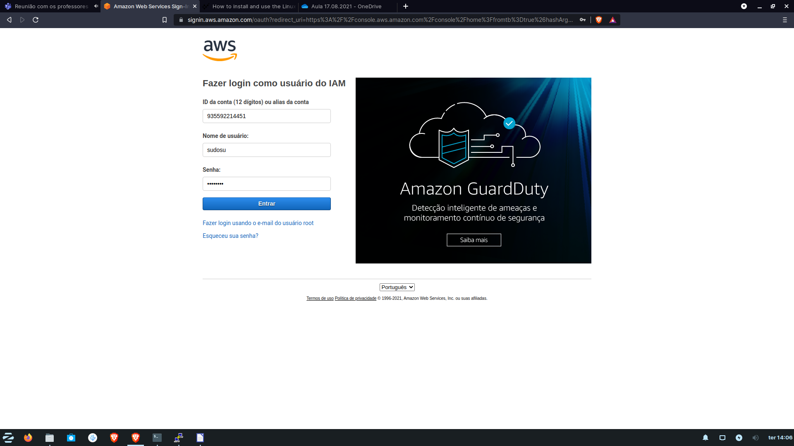
Esta é a tela inicial
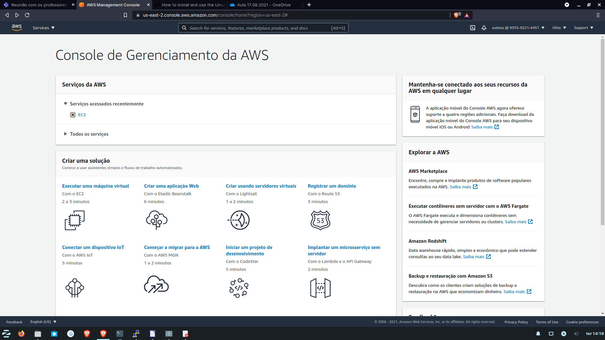
Passo 2: Na barra de pesquisa digite "ec2". Logo em seguida clique sobre ec2.
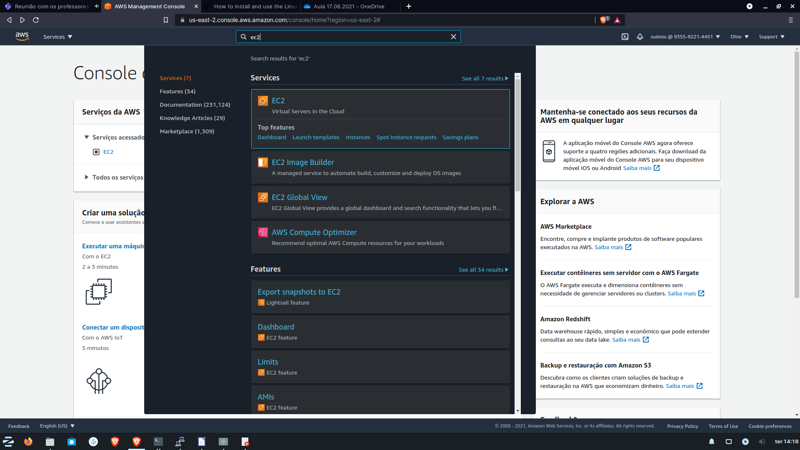Passo 3: No painel lateral esquerdo clique sobre "Instâncias". Posteriormente, clique no botão laranja "Executar Instâncias".
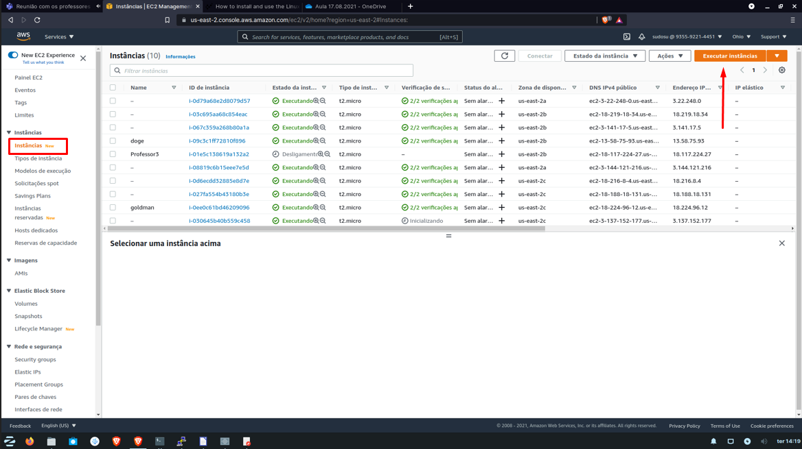Passo 4: Selecione o Ubuntu Server 20.04 LTS (selecione a arquitetura adequado)
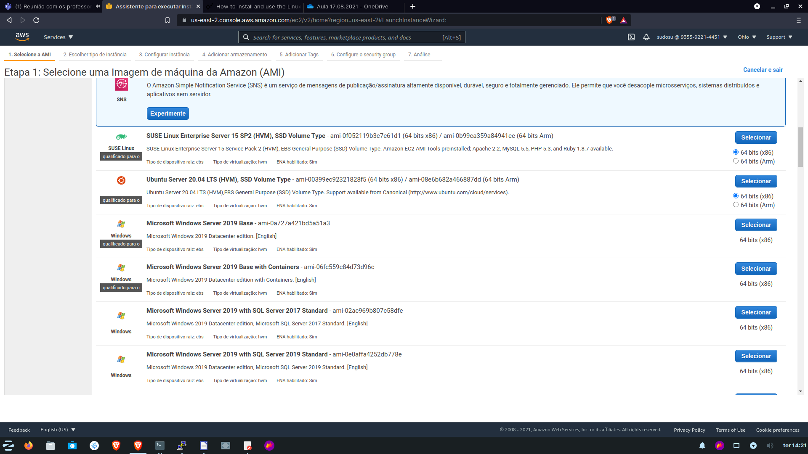Passo 5: Em "Grupos de segurança", clique em "Editar grupos de segurança"

Passo 6: Na nossa atividade o "Nome do grupo de segurança" foi alterado; fica ao critério do usuário modificá-lo para facilitar a identificação.
Clique em "Adicionar regra" e, seguidamente, acrescente "HTTP" e "HTTPS".
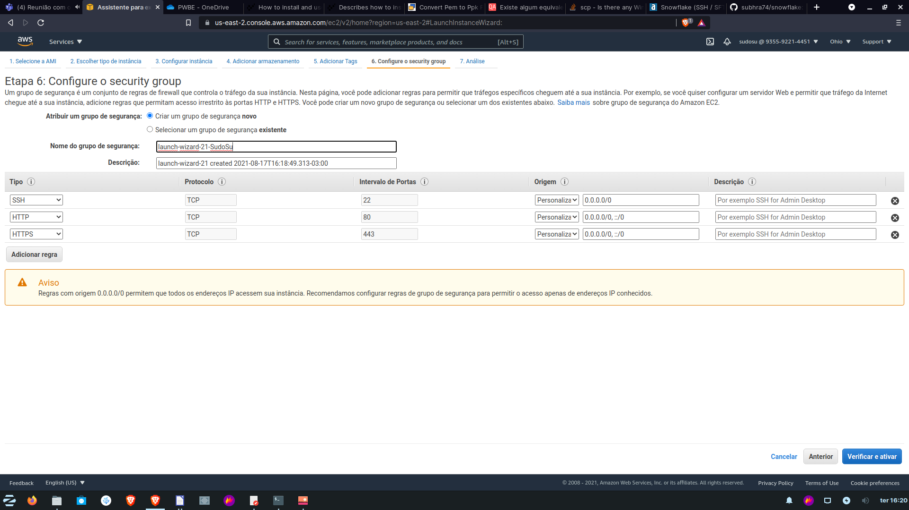Por fim, clique em Verificar e ativar.
Passo 7: Em "Tags", clique em "Editar Tags"
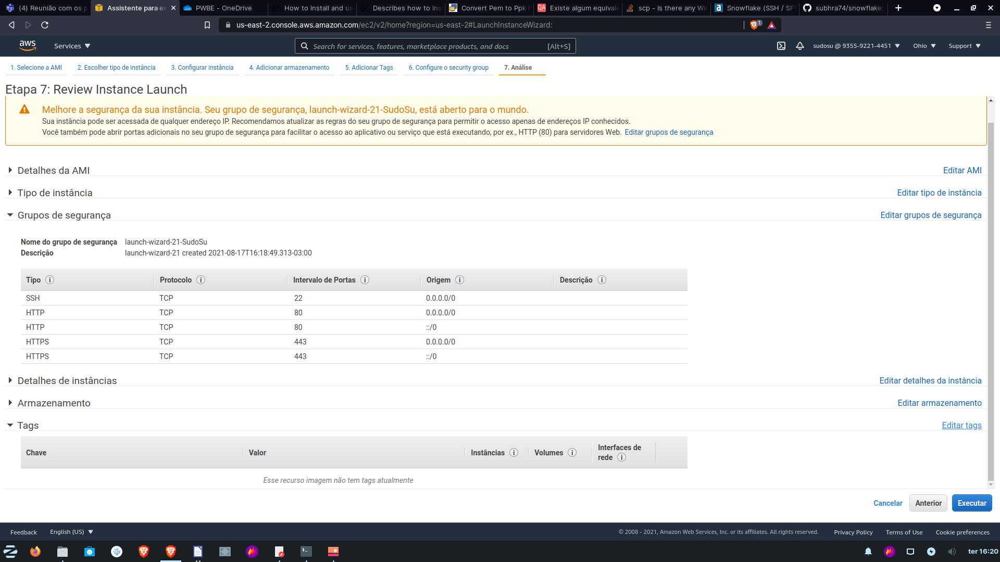Passo 8: No campo "Chave", digite "Name"; no campo "Valor" digite um nome de sua preferência. Aqui utilizaremos "SudoSu".
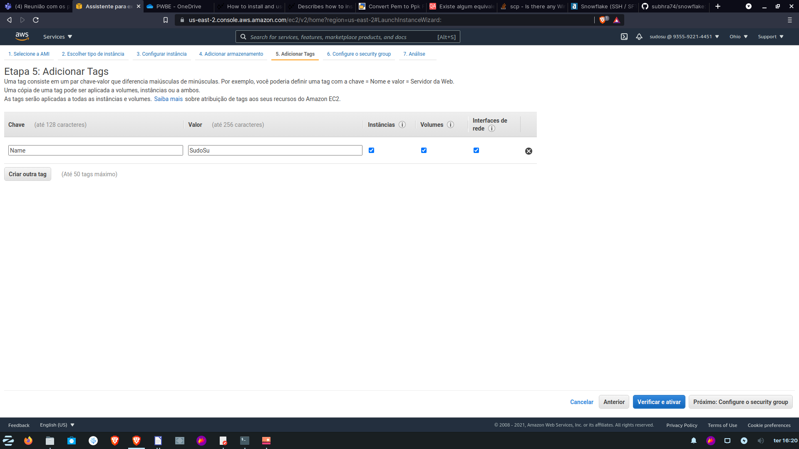Passo 9: Clique em executar.
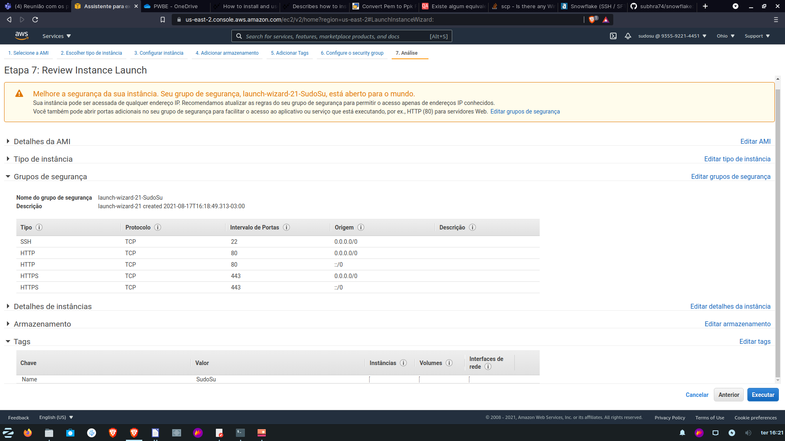Passo 10: Na primeira caixa, selecione "Criar um novo par de chaves". Na segunda, digite o nome para o par de chaves. Aqui usaremos "SudoSu"
Clique em "Fazer download do par de chaves". Por fim, clique em "Executar instância"

Ao exibir essa tela, sua instância estará criada.

Passo 11: Volte para a página de Instâncias e clique sobre o ID da instância criada.
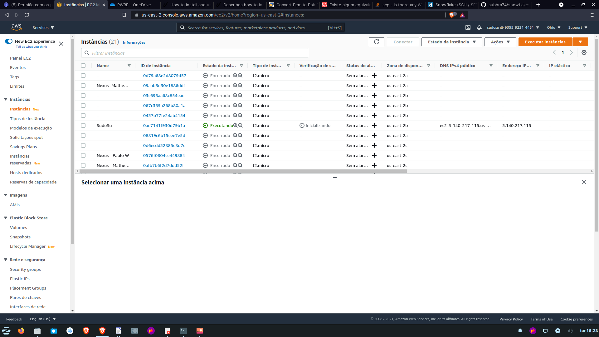Passo 12: Copie o endereço IPv4 Público.
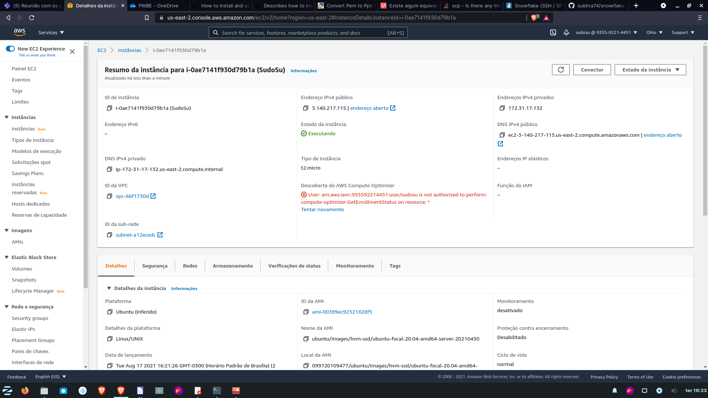Acessando remotamente o servidor atráves do Putty
Instalação do Putty
Se você está em uma distribuição Linux baseada em Debian, digite o comando:
sudo apt update
sudo apt install putty -y
Se você está no Windows, pesquise e baixe o instalador através do browser. Feito isso, é só instalar o programa.
Convertendo chave .ppm para .ppk
Abra o PuttyGen, clique em Load e navegue até o local onde foi baixado a chave .ppm do AWS; Selecione-a.
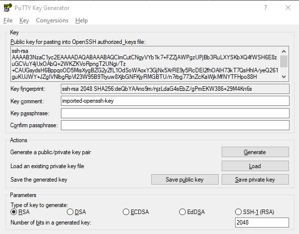Por fim clique em "Save private key"
Utilizando o Putty
Passo 1: Em "Host Name (or IP address)", insira o IPv4 Público copiado no site da AWS.
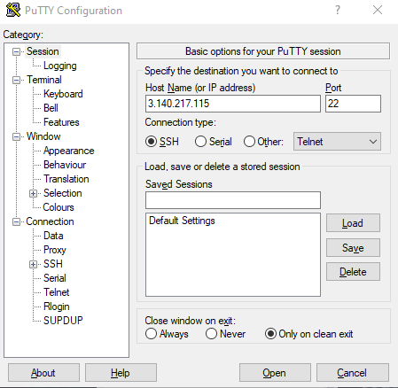Passo 2: No painel lateral esquerdo, clique sobre "SSH" e em seguida sobre "Auth".
Em "Private key file for authentication:" clique sobre "Browse". Selecione a chave convertida para .ppk
Por fim, clique em "Open"
Pronto! Agora você está acessando o seu servidor remotamente.
Configurando o novo servidor
Passo 1: Inicialmente iremos atualizar o servidor, para tanto, execute os comandos abaixo:
sudo apt update
sudo apt upgrade -y
Passo 2: Agora vamos instalar o Apache e o Git:
sudo apt install apache2 git-all
Passo 3: Para permitir que a pasta /var/www/html seja acessada remotamente, execute o seguinte comando:
sudo su
chown -R ubuntu:ubuntu /var/www/html
Lançando arquivos no servidor através do WinSCP
Passo 1: Em Host, insira o IPv4 Público. Em Usuário, insira "ubuntu".

Passo 2: Clique em Avançado > SSH > Autenticação. Em "Parâmetros de autenticação" clique nos três pondos e localize a chave .ppk

Passo 3: No painel lateral esquerdo, localize a sua pasta onde há os asquivos referente a página HTML.
No painel lateral direito, navegue até "/var/www/html/"
Por fim, arraste o seu arquivo do painel lateral esquerdo para o servidor (painel lateral direito).

Acessando sua página
Para realizar o acesso, no navegador insira o Endereço IPv4 Público, uma barra e o nome da pasta onde está o "index.html" no servidor. A exemplo, nosso endereço IPv4 é "3.140.217.115", e o nome da nossa pasta é "GitTutorials"; portanto, o lin de acesso é: 3.140.217.115/GitTutorials/